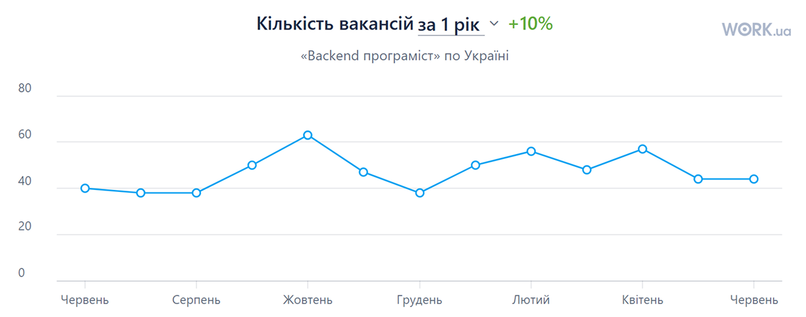

Бекенд-розробник — це фахівець, який відповідає за «внутрішню начинку» сайту або застосунку: обробку даних, роботу з базами, взаємодію з сервером та зовнішніми сервісами. Якщо фронтенд — це те, що бачить користувач, то бекенд — це те, завдяки чому все працює. Він створює непомітну, але критично важливу частину програмного забезпечення. Бекенд-розробник не створює дизайн, не працює з анімаціями й кольорами. Його зона відповідальності — логіка, функціональність і взаємодія. Він будує те, чого не видно, але без чого не існує жоден сучасний сервіс.
Бекенд-розробник відповідає за логіку, функціональність і взаємодію частин застосунку, які не видно користувачу. Серед основних завдань:

Novu
Платформа для керування сповіщеннями з підтримкою email, SMS, push та інших каналів.
Cal.com
Альтернатива Calendly з відкритим кодом для планування зустрічей.

Formbricks
Інструмент для створення та аналізу опитувань з гарною документацією.

Rocket.Chat
Платформа для командного спілкування з підтримкою чатів, відеодзвінків та інтеграцій.

Strapi
Гнучкий headless CMS на Node.js для створення API.

Dub
Сервіс для скорочення URL з аналітикою та інтеграцією з базами даних.

61 500 грн
на червень 2025
Один із найсильніших технічних вишів в Україні. Має спеціальності "Комп’ютерні науки", "Інженерія програмного забезпечення", "Системний аналіз". Пропонує глибоку теоретичну та практичну базу з програмування, алгоритмів, баз даних — тобто всього, що потрібно бекенд-розробнику.
Сильна ІТ-школа з акцентом на сучасні технології. Має ті ж основні спеціальності — комп’ютерні науки, інженерія ПЗ, системний аналіз. Є можливість працювати над проєктами під час навчання та стажуватися у місцевих ІТ-компаніях.
Цей виш спеціалізується саме на ІТ-сфері. Його випускники часто працюють у провідних ІТ-компаніях. Програми орієнтовані на практику, вивчаються мови програмування, системне проектування, робота з базами даних тощо.
Престижний університет з високим рівнем фундаментальної освіти. Програми дещо академічні, але дають дуже хорошу теоретичну базу. Підійде тим, хто хоче не лише писати код, а й розуміти глибокі основи комп’ютерних наук.
Ще один технічний виш з акцентом на інженерні ІТ-напрями. Дає серйозну підготовку з розробки програмного забезпечення, особливо в частині системного та серверного програмування.
Приватний, але дуже прогресивний виш з сучасними програмами навчання в ІТ. Є спеціальність "Комп’ютерні науки", орієнтована на практику, англійську мову викладання та підготовку до реального ринку праці. Випускники працюють в українських і міжнародних компаніях.
Ще один відомий виш із гарною репутацією. Програма "Інформатика" чи "Комп’ютерні науки" тут надає хорошу базу для розвитку в бекенді, особливо якщо ви зацікавлені в роботі на перетині програмування й аналітики.